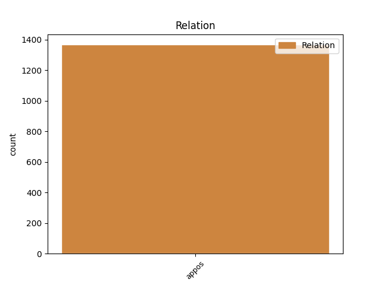
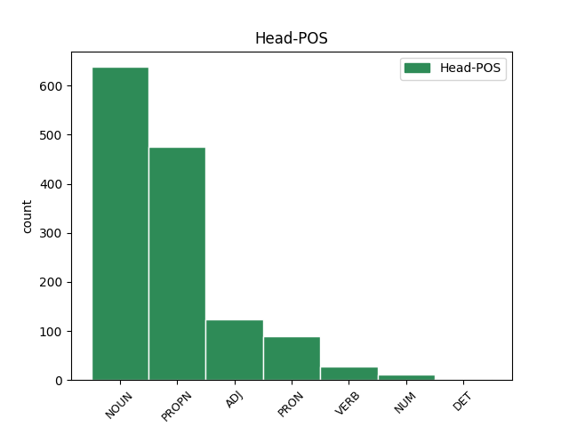
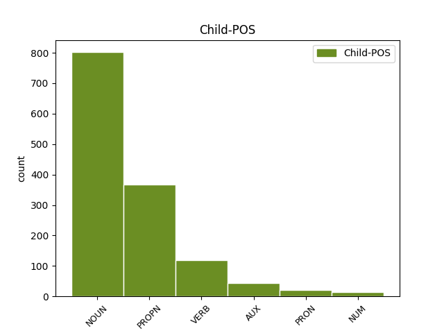

Distribution of features within this leaf



Agreement Rules sorted by frequency.
- When the dependent token is the appositional modifier(appos) of the head token, and the dependent token is NOUN.
1 σύνδουλός _ _ _ _ 0 _ _ _
2 σού _ _ _ _ 0 _ _ _
3 εἰμι _ _ _ _ 0 _ _ _
4 καὶ _ _ _ _ 0 _ _ _
5 τῶν _ _ _ _ 0 _ _ _
6 ἀδελφῶν ἀδελφός NOUN Nb Case=Gen|Gender=Masc|Number=Plur 0 _ _ _
7 σου _ _ _ _ 0 _ _ _
8 τῶν _ _ _ _ 0 _ _ _
9 προφητῶν προφήτης NOUN Nb Case=Gen|Gender=Masc|Number=Plur 6 appos _ ref=REV_22.9
10 καὶ _ _ _ _ 0 _ _ _
11 τῶν _ _ _ _ 0 _ _ _
12 τηρούντων _ _ _ _ 0 _ _ _
13 τοὺς _ _ _ _ 0 _ _ _
14 λόγους _ _ _ _ 0 _ _ _
15 τοῦ _ _ _ _ 0 _ _ _
16 βιβλίου _ _ _ _ 0 _ _ _
17 τούτου _ _ _ _ 0 _ _ _
1 Ἡ _ _ _ _ 0 _ _ _
2 χάρις _ _ _ _ 0 _ _ _
3 τοῦ _ _ _ _ 0 _ _ _
4 κυρίου κύριος NOUN Nb Case=Gen|Gender=Masc|Number=Sing 0 _ _ _
5 Ἰησοῦ Ἰησοῦς PROPN Ne Case=Gen|Gender=Masc|Number=Sing 4 appos _ ref=REV_22.21
6 μετὰ _ _ _ _ 0 _ _ _
7 πάντων _ _ _ _ 0 _ _ _
1 καὶ _ _ _ _ 0 _ _ _
2 ὁ _ _ _ _ 0 _ _ _
3 διάβολος διάβολος NOUN Nb Case=Nom|Gender=Masc|Number=Sing 0 _ _ _
4 ὁ _ _ _ _ 0 _ _ _
5 πλανῶν πλανάω VERB V- Case=Nom|Gender=Masc|Number=Sing|Tense=Pres|VerbForm=Part|Voice=Act 3 appos _ ref=REV_20.10
6 αὐτοὺς _ _ _ _ 0 _ _ _
7 ἐβλήθη _ _ _ _ 0 _ _ _
8 εἰς _ _ _ _ 0 _ _ _
9 τὴν _ _ _ _ 0 _ _ _
10 λίμνην _ _ _ _ 0 _ _ _
11 τοῦ _ _ _ _ 0 _ _ _
12 πυρὸς _ _ _ _ 0 _ _ _
13 καὶ _ _ _ _ 0 _ _ _
14 τοῦ _ _ _ _ 0 _ _ _
15 θείου _ _ _ _ 0 _ _ _
16 ὅπου _ _ _ _ 0 _ _ _
17 καὶ _ _ _ _ 0 _ _ _
18 τὸ _ _ _ _ 0 _ _ _
19 θηρίον _ _ _ _ 0 _ _ _
20 καὶ _ _ _ _ 0 _ _ _
21 ὁ _ _ _ _ 0 _ _ _
22 ψευδοπροφήτης _ _ _ _ 0 _ _ _
23 καὶ _ _ _ _ 0 _ _ _
24 βασανισθήσονται _ _ _ _ 0 _ _ _
25 ἡμέρας _ _ _ _ 0 _ _ _
26 καὶ _ _ _ _ 0 _ _ _
27 νυκτὸς _ _ _ _ 0 _ _ _
28 εἰς _ _ _ _ 0 _ _ _
29 τοὺς _ _ _ _ 0 _ _ _
30 αἰῶνας _ _ _ _ 0 _ _ _
31 τῶν _ _ _ _ 0 _ _ _
32 αἰώνων _ _ _ _ 0 _ _ _
1 εὐχαριστοῦμέν _ _ _ _ 0 _ _ _
2 σοι _ _ _ _ 0 _ _ _
3 κύριε _ _ _ _ 0 _ _ _
4 ὁ _ _ _ _ 0 _ _ _
5 θεὸς θεός NOUN Nb Case=Nom|Gender=Masc|Number=Sing 0 _ _ _
6 ὁ _ _ _ _ 0 _ _ _
7 παντοκράτωρ _ _ _ _ 0 _ _ _
8 ὁ _ _ _ _ 0 _ _ _
9 ὢν εἰμί AUX V- Case=Nom|Gender=Masc|Number=Sing|Tense=Pres|VerbForm=Part|Voice=Act 5 appos _ LId=1|ref=REV_11.17
10 καὶ _ _ _ _ 0 _ _ _
11 ὁ _ _ _ _ 0 _ _ _
12 ἦν _ _ _ _ 0 _ _ _
13 καὶ _ _ _ _ 0 _ _ _
14 ὅτι _ _ _ _ 0 _ _ _
15 εἴληφας _ _ _ _ 0 _ _ _
16 τὴν _ _ _ _ 0 _ _ _
17 δύναμίν _ _ _ _ 0 _ _ _
18 σου _ _ _ _ 0 _ _ _
19 τὴν _ _ _ _ 0 _ _ _
20 μεγάλην _ _ _ _ 0 _ _ _
21 καὶ _ _ _ _ 0 _ _ _
22 ἐβασίλευσας _ _ _ _ 0 _ _ _
23 καὶ _ _ _ _ 0 _ _ _
24 τὰ _ _ _ _ 0 _ _ _
25 ἔθνη _ _ _ _ 0 _ _ _
26 ὠργίσθησαν _ _ _ _ 0 _ _ _
27 καὶ _ _ _ _ 0 _ _ _
28 ἦλθεν _ _ _ _ 0 _ _ _
29 ἡ _ _ _ _ 0 _ _ _
30 ὀργή _ _ _ _ 0 _ _ _
31 σου _ _ _ _ 0 _ _ _
32 καὶ _ _ _ _ 0 _ _ _
33 ὁ _ _ _ _ 0 _ _ _
34 καιρὸς _ _ _ _ 0 _ _ _
35 τῶν _ _ _ _ 0 _ _ _
36 νεκρῶν _ _ _ _ 0 _ _ _
37 κριθῆναι _ _ _ _ 0 _ _ _
38 καὶ _ _ _ _ 0 _ _ _
39 δοῦναι _ _ _ _ 0 _ _ _
40 τὸν _ _ _ _ 0 _ _ _
41 μισθὸν _ _ _ _ 0 _ _ _
42 τοῖς _ _ _ _ 0 _ _ _
43 δούλοις _ _ _ _ 0 _ _ _
44 σου _ _ _ _ 0 _ _ _
45 τοῖς _ _ _ _ 0 _ _ _
46 προφήταις _ _ _ _ 0 _ _ _
47 καὶ _ _ _ _ 0 _ _ _
48 τοῖς _ _ _ _ 0 _ _ _
49 ἁγίοις _ _ _ _ 0 _ _ _
50 καὶ _ _ _ _ 0 _ _ _
51 τοῖς _ _ _ _ 0 _ _ _
52 φοβουμένοις _ _ _ _ 0 _ _ _
53 τὸ _ _ _ _ 0 _ _ _
54 ὄνομά _ _ _ _ 0 _ _ _
55 σου _ _ _ _ 0 _ _ _
56 τοῖς _ _ _ _ 0 _ _ _
57 μικροῖς _ _ _ _ 0 _ _ _
58 καὶ _ _ _ _ 0 _ _ _
59 τοῖς _ _ _ _ 0 _ _ _
60 μεγάλοις _ _ _ _ 0 _ _ _
61 καὶ _ _ _ _ 0 _ _ _
62 διαφθεῖραι _ _ _ _ 0 _ _ _
63 τοὺς _ _ _ _ 0 _ _ _
64 διαφθείροντας _ _ _ _ 0 _ _ _
65 τὴν _ _ _ _ 0 _ _ _
66 γῆν _ _ _ _ 0 _ _ _
1 καὶ _ _ _ _ 0 _ _ _
2 ποιεῖ _ _ _ _ 0 _ _ _
3 τὴν _ _ _ _ 0 _ _ _
4 γῆν _ _ _ _ 0 _ _ _
5 καὶ _ _ _ _ 0 _ _ _
6 τοὺς _ _ _ _ 0 _ _ _
7 ἐν _ _ _ _ 0 _ _ _
8 αὐτῇ _ _ _ _ 0 _ _ _
9 κατοικοῦντας _ _ _ _ 0 _ _ _
10 ἵνα _ _ _ _ 0 _ _ _
11 προσκυνήσουσιν _ _ _ _ 0 _ _ _
12 τὸ _ _ _ _ 0 _ _ _
13 θηρίον _ _ _ _ 0 _ _ _
14 τὸ _ _ _ _ 0 _ _ _
15 πρῶτον _ _ _ _ 0 _ _ _
16 οὗ ὅς PRON Pr Case=Gen|Gender=Neut|Number=Sing|PronType=Rel 0 _ _ _
17 ἐθεραπεύθη _ _ _ _ 0 _ _ _
18 ἡ _ _ _ _ 0 _ _ _
19 πληγὴ _ _ _ _ 0 _ _ _
20 τοῦ _ _ _ _ 0 _ _ _
21 θανάτου _ _ _ _ 0 _ _ _
22 αὐτοῦ αὐτός PRON Pp Case=Gen|Gender=Neut|Number=Sing|Person=3|PronType=Prs 16 appos _ ref=REV_13.12
1 αὗται _ _ _ _ 0 _ _ _
2 γάρ _ _ _ _ 0 _ _ _
3 εἰσιν _ _ _ _ 0 _ _ _
4 δύο _ _ _ _ 0 _ _ _
5 διαθῆκαι διαθήκη NOUN Nb Case=Nom|Gender=Fem|Number=Plur 0 _ _ _
6 μία εἷς NUM Ma Case=Nom|Gender=Fem|Number=Sing 5 appos _ ref=GAL_4.24
7 μὲν _ _ _ _ 0 _ _ _
8 ἀπὸ _ _ _ _ 0 _ _ _
9 ὄρους _ _ _ _ 0 _ _ _
10 Σινᾶ _ _ _ _ 0 _ _ _
11 εἰς _ _ _ _ 0 _ _ _
12 δουλίαν _ _ _ _ 0 _ _ _
13 γεννῶσα _ _ _ _ 0 _ _ _
14 ἥτις _ _ _ _ 0 _ _ _
15 ἐστὶν _ _ _ _ 0 _ _ _
16 Ἄγαρ _ _ _ _ 0 _ _ _
Disagree Examples:
1 ἦν _ _ _ _ 0 _ _ _
2 δὲ _ _ _ _ 0 _ _ _
3 καὶ _ _ _ _ 0 _ _ _
4 ἡ _ _ _ _ 0 _ _ _
5 μέχρι _ _ _ _ 0 _ _ _
6 Μαλέων _ _ _ _ 0 _ _ _
7 ἡ _ _ _ _ 0 _ _ _
8 πρὸς _ _ _ _ 0 _ _ _
9 ἑσπέρην ἑσπέρα NOUN Nb Case=Acc|Gender=Fem|Number=Sing 0 _ _ _
10 Ἀργείων _ _ _ _ 0 _ _ _
11 ἥ _ _ _ _ 0 _ _ _
12 τε _ _ _ _ 0 _ _ _
13 ἐν _ _ _ _ 0 _ _ _
14 τῇ _ _ _ _ 0 _ _ _
15 ἠπείρῳ _ _ _ _ 0 _ _ _
16 χώρῇ χώρα NOUN Nb Case=Nom|Gender=Fem|Number=Sing 9 appos _ ref=1.82.2
17 καὶ _ _ _ _ 0 _ _ _
18 ἡ _ _ _ _ 0 _ _ _
19 Κυθηρίη _ _ _ _ 0 _ _ _
20 νῆσος _ _ _ _ 0 _ _ _
21 καὶ _ _ _ _ 0 _ _ _
22 αἱ _ _ _ _ 0 _ _ _
23 λοιπαὶ _ _ _ _ 0 _ _ _
24 τῶν _ _ _ _ 0 _ _ _
25 νήσων _ _ _ _ 0 _ _ _
1 θώματα θαῦμα NOUN Nb Case=Acc|Gender=Neut|Number=Plur 0 _ _ _
2 δὲ _ _ _ _ 0 _ _ _
3 γῆ _ _ _ _ 0 _ _ _
4 ἡ _ _ _ _ 0 _ _ _
5 Λυδίη _ _ _ _ 0 _ _ _
6 ἐς _ _ _ _ 0 _ _ _
7 συγγραφὴν _ _ _ _ 0 _ _ _
8 οὐ _ _ _ _ 0 _ _ _
9 μάλα _ _ _ _ 0 _ _ _
10 ἔχει _ _ _ _ 0 _ _ _
11 οἷά _ _ _ _ 0 _ _ _
12 τε _ _ _ _ 0 _ _ _
13 καὶ _ _ _ _ 0 _ _ _
14 ἄλλη _ _ _ _ 0 _ _ _
15 χώρη χώρα NOUN Nb Case=Nom|Gender=Fem|Number=Sing 1 appos _ ref=1.93.1
16 πάρεξ _ _ _ _ 0 _ _ _
17 τοῦ _ _ _ _ 0 _ _ _
18 ἐκ _ _ _ _ 0 _ _ _
19 τοῦ _ _ _ _ 0 _ _ _
20 Τμώλου _ _ _ _ 0 _ _ _
21 καταφερομένου _ _ _ _ 0 _ _ _
22 ψήγματος _ _ _ _ 0 _ _ _
1 μετὰ _ _ _ _ 0 _ _ _
2 ταῦτα _ _ _ _ 0 _ _ _
3 ἐπιτρέψας _ _ _ _ 0 _ _ _
4 τὰς _ _ _ _ 0 _ _ _
5 μὲν _ _ _ _ 0 _ _ _
6 Σάρδις _ _ _ _ 0 _ _ _
7 Ταβάλῳ Τάβαλος PROPN Ne Case=Nom|Gender=Masc|Number=Sing 0 _ _ _
8 ἀνδρὶ ἀνήρ NOUN Nb Case=Dat|Gender=Masc|Number=Sing 7 appos _ ref=1.153.3
9 Πέρσῃ _ _ _ _ 0 _ _ _
10 τὸν _ _ _ _ 0 _ _ _
11 δὲ _ _ _ _ 0 _ _ _
12 χρυσὸν _ _ _ _ 0 _ _ _
13 τόν _ _ _ _ 0 _ _ _
14 τε _ _ _ _ 0 _ _ _
15 Κροίσου _ _ _ _ 0 _ _ _
16 καὶ _ _ _ _ 0 _ _ _
17 τὸν _ _ _ _ 0 _ _ _
18 τῶν _ _ _ _ 0 _ _ _
19 ἄλλων _ _ _ _ 0 _ _ _
20 Λυδῶν _ _ _ _ 0 _ _ _
21 Πακτύῃ _ _ _ _ 0 _ _ _
22 ἀνδρὶ _ _ _ _ 0 _ _ _
23 Λυδῷ _ _ _ _ 0 _ _ _
24 κομίζειν _ _ _ _ 0 _ _ _
25 ἀπήλαυνε _ _ _ _ 0 _ _ _
26 αὐτὸς _ _ _ _ 0 _ _ _
27 ἐς _ _ _ _ 0 _ _ _
28 Ἀγβάτανα _ _ _ _ 0 _ _ _
29 Κροῖσόν _ _ _ _ 0 _ _ _
30 τε _ _ _ _ 0 _ _ _
31 ἅμα _ _ _ _ 0 _ _ _
32 ἀγόμενος _ _ _ _ 0 _ _ _
33 καὶ _ _ _ _ 0 _ _ _
34 τοὺς _ _ _ _ 0 _ _ _
35 Ἴωνας _ _ _ _ 0 _ _ _
36 ἐν _ _ _ _ 0 _ _ _
37 οὐδενὶ _ _ _ _ 0 _ _ _
38 λόγῳ _ _ _ _ 0 _ _ _
39 ποιησάμενος _ _ _ _ 0 _ _ _
40 τὴν _ _ _ _ 0 _ _ _
41 πρώτην _ _ _ _ 0 _ _ _
42 εἶναι _ _ _ _ 0 _ _ _
1 μετὰ _ _ _ _ 0 _ _ _
2 ταῦτα _ _ _ _ 0 _ _ _
3 ἐπιτρέψας _ _ _ _ 0 _ _ _
4 τὰς _ _ _ _ 0 _ _ _
5 μὲν _ _ _ _ 0 _ _ _
6 Σάρδις _ _ _ _ 0 _ _ _
7 Ταβάλῳ _ _ _ _ 0 _ _ _
8 ἀνδρὶ _ _ _ _ 0 _ _ _
9 Πέρσῃ _ _ _ _ 0 _ _ _
10 τὸν _ _ _ _ 0 _ _ _
11 δὲ _ _ _ _ 0 _ _ _
12 χρυσὸν _ _ _ _ 0 _ _ _
13 τόν _ _ _ _ 0 _ _ _
14 τε _ _ _ _ 0 _ _ _
15 Κροίσου _ _ _ _ 0 _ _ _
16 καὶ _ _ _ _ 0 _ _ _
17 τὸν _ _ _ _ 0 _ _ _
18 τῶν _ _ _ _ 0 _ _ _
19 ἄλλων _ _ _ _ 0 _ _ _
20 Λυδῶν _ _ _ _ 0 _ _ _
21 Πακτύῃ Πακτύης PROPN Ne Case=Nom|Gender=Masc|Number=Sing 0 _ _ _
22 ἀνδρὶ ἀνήρ NOUN Nb Case=Dat|Gender=Masc|Number=Sing 21 appos _ ref=1.153.3
23 Λυδῷ _ _ _ _ 0 _ _ _
24 κομίζειν _ _ _ _ 0 _ _ _
25 ἀπήλαυνε _ _ _ _ 0 _ _ _
26 αὐτὸς _ _ _ _ 0 _ _ _
27 ἐς _ _ _ _ 0 _ _ _
28 Ἀγβάτανα _ _ _ _ 0 _ _ _
29 Κροῖσόν _ _ _ _ 0 _ _ _
30 τε _ _ _ _ 0 _ _ _
31 ἅμα _ _ _ _ 0 _ _ _
32 ἀγόμενος _ _ _ _ 0 _ _ _
33 καὶ _ _ _ _ 0 _ _ _
34 τοὺς _ _ _ _ 0 _ _ _
35 Ἴωνας _ _ _ _ 0 _ _ _
36 ἐν _ _ _ _ 0 _ _ _
37 οὐδενὶ _ _ _ _ 0 _ _ _
38 λόγῳ _ _ _ _ 0 _ _ _
39 ποιησάμενος _ _ _ _ 0 _ _ _
40 τὴν _ _ _ _ 0 _ _ _
41 πρώτην _ _ _ _ 0 _ _ _
42 εἶναι _ _ _ _ 0 _ _ _
1 τοὺς _ _ _ _ 0 _ _ _
2 δὲ _ _ _ _ 0 _ _ _
3 Κιμμερίους _ _ _ _ 0 _ _ _
4 ἐπιόντων _ _ _ _ 0 _ _ _
5 Σκυθέων _ _ _ _ 0 _ _ _
6 βουλεύεσθαι _ _ _ _ 0 _ _ _
7 ὡς _ _ _ _ 0 _ _ _
8 στρατοῦ _ _ _ _ 0 _ _ _
9 ἐπιόντος _ _ _ _ 0 _ _ _
10 μεγάλου _ _ _ _ 0 _ _ _
11 καὶ _ _ _ _ 0 _ _ _
12 δὴ _ _ _ _ 0 _ _ _
13 τὰς _ _ _ _ 0 _ _ _
14 γνώμας _ _ _ _ 0 _ _ _
15 σφέων _ _ _ _ 0 _ _ _
16 κεχωρισμένας _ _ _ _ 0 _ _ _
17 ἐντόνους _ _ _ _ 0 _ _ _
18 μὲν _ _ _ _ 0 _ _ _
19 ἀμφοτέρας _ _ _ _ 0 _ _ _
20 ἀμείνω _ _ _ _ 0 _ _ _
21 δὲ _ _ _ _ 0 _ _ _
22 τὴν ὁ PRON Pp Case=Acc|Gender=Fem|Number=Sing|Person=3|PronType=Prs 0 _ _ _
23 τῶν _ _ _ _ 0 _ _ _
24 βασιλέων βασιλεύς NOUN Nb Case=Gen|Gender=Masc|Number=Plur 22 appos _ ref=4.11.2